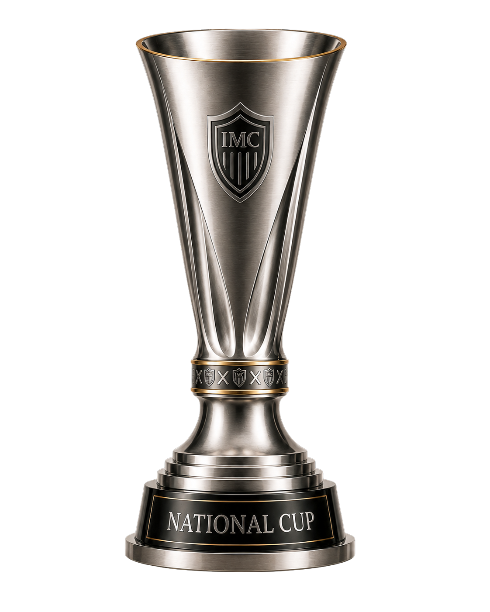

A NEW ITALIAN FORCE.
A GLOBAL
AMBITION.
The official home of Italian Masters Club.
Competizione, identità e storia condivisa nell’universo di Soccer Manager.
—Manager IMC
—Game Worlds
1Community
Live data powered by IMC Nexus
THE IMC UNIVERSE
9 mondi.
Una sola community.
Ogni Game World ha una propria identità, stagione e storia. Nexus li collega mantenendoli indipendenti.


THE DIGITAL HEART OF IMC
IMC
NEXUS.
Un’unica piattaforma per risultati, classifiche, statistiche, H2H, Trophy Room, manager e storia dei Game World.
- Results & Schedule
- Standings & Stats
- Head To Head
- Trophy Room
IMC COMPETITIONS
Trofei che costruiscono una storia.
Competizioni domestiche e internazionali attraversano i Game World e alimentano la Trophy Room di Nexus.

INTERNATIONAL
IMC Champions
Il palcoscenico internazionale più prestigioso dell’universo IMC.

INTERNATIONAL
IMC Shield
Una seconda strada verso la gloria internazionale.

NATIONAL TEAMS
World Cup
Le nazionali, i manager IMC e il titolo mondiale.

DOMESTIC
National Cup
Knockout puro. Una partita, un verdetto.
IMC MANAGERS
Le persone
dietro i Game World.
Il roster ufficiale Italian Masters Club, letto direttamente dal Manager Registry di Nexus.
Caricamento Manager Registry…
THIS IS IMC.
Competizione.
Rivalità.
Community.
Italian Masters Club riunisce manager, Game World e competizioni in un ecosistema condiviso costruito attorno a Soccer Manager.
Ogni stagione aggiunge risultati, storie, record e rivalità. Nexus conserva tutto.
Discover the IMC universe →